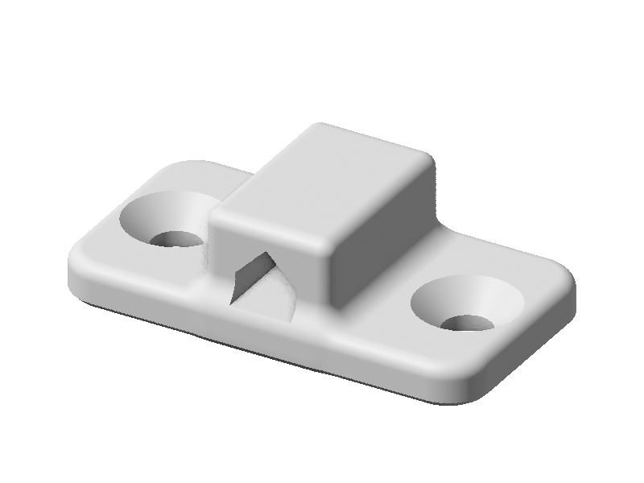
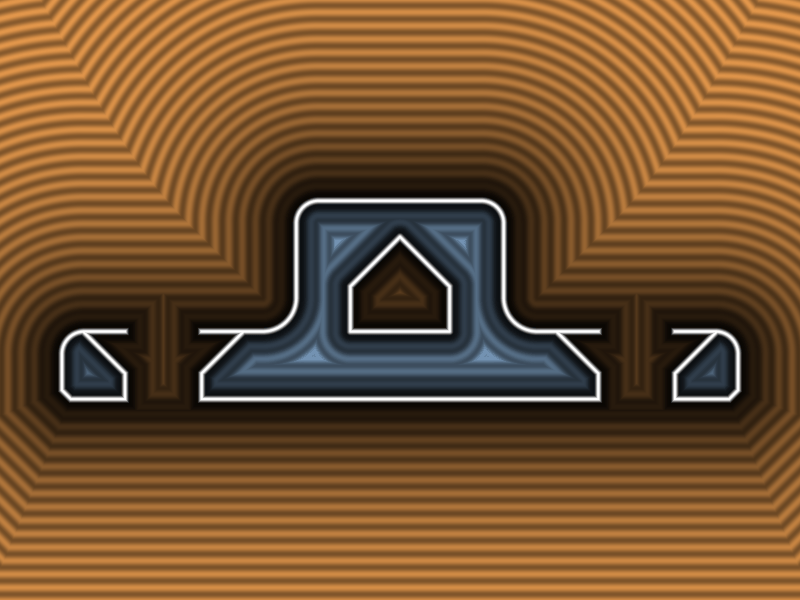

zip-tie-mount
Drafted with AI, not yet reviewed
by keycap
Zip-tie mount: a base that screws or sticks to a surface, with a bridge for a cable tie to pass under, to hold cables along a wall or a desk.
The tie runs across the base, under the bridge; the cables lie along it, over the bridge and the screws’ countersunk heads. The ties’ widths are the usual metric ones; their thicknesses are the thickest of Wandu’s table (wanducn.com, “How Thick Is a Zip Tie”), as makers differ.
Prints on its base, without supports: the tunnel’s roof is a 45-degree gable instead of a flat bridge.
Unverified: the print without supports.



Files
Source
// SPDX-License-Identifier: 0BSD // // Zip-tie mount: a base that screws or sticks to a surface, with a bridge // for a cable tie to pass under, to hold cables along a wall or a desk. // // The tie runs across the base, under the bridge; the cables lie along // it, over the bridge and the screws' countersunk heads. The ties' // widths are the usual metric ones; their thicknesses are the thickest of // Wandu's table (wanducn.com, "How Thick Is a Zip Tie"), as makers differ. // // Prints on its base, without supports: the tunnel's roof is a 45-degree // gable instead of a flat bridge. // // Unverified: the print without supports. // --- Parameters --- const TIES = #{ "2.5": [2.5, 1.0], // width and thickness "3.6": [3.6, 1.2], "4.8": [4.8, 1.4], }; const TIE = "3.6"; const CLEARANCE = 0.4; // round the tie, on each side const MOUNT = "screw"; // "screw" (two countersunk M3) or "adhesive" (a flat base for foam tape) const BASE = [30.0, 16.0]; // along the cables, and across them const BASE_T = 3.0; // takes an M3 countersunk head const ROOF = 1.6; // above the gable's peak const WALL = 2.4; // either side of the tunnel // --- Base --- let base = rect(BASE, #{round: 3}) .extrude([0, BASE_T], #{round: [0, 1], chamfer: [0.4, 0]}); // --- Bridge --- // The tunnel's section, across Y: a rectangle as wide and as tall as the // tie and its clearance, under a gable whose sides rise at 45 degrees, so // that each layer of the roof rests on the one below. let tie = TIES[TIE]; let w = tie[0] + 2 * CLEARANCE; let h = tie[1] + 2 * CLEARANCE; let section = polygon([ [-w / 2, 0], [w / 2, 0], [w / 2, h], [0, h + w / 2], [-w / 2, h], ]); let tunnel = section .extrude(BASE[1] + 2) .rotate_x(90) .move([0, 0, BASE_T]); // The block the tunnel goes through, a little shorter than the base is // wide, so that the fillet runs round its ends too. let top = BASE_T + h + w / 2 + ROOF; let block = cuboid([w + 2 * WALL, BASE[1] - 2, top], #{round: 1}) .move([0, 0, top / 2]); // --- Screws --- let cutters = [tunnel]; if MOUNT == "screw" { let spread = BASE[0] - 9; cutters.push( screw_hole("M3", BASE_T + 1, #{head: "countersunk"}) .move([0, 0, BASE_T]) .linear_array([spread, 0], 2, #{center: true}) ); } // --- Mount --- draw(union_round(base, block, 1.5).difference(cutters).intersection(-z));